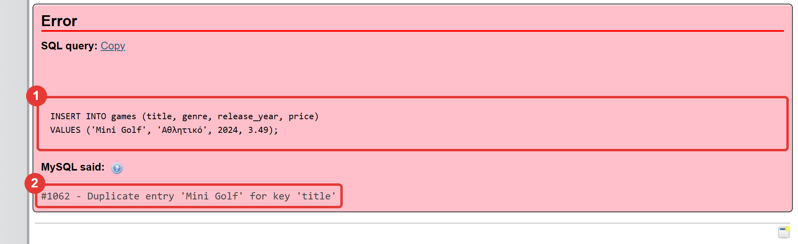
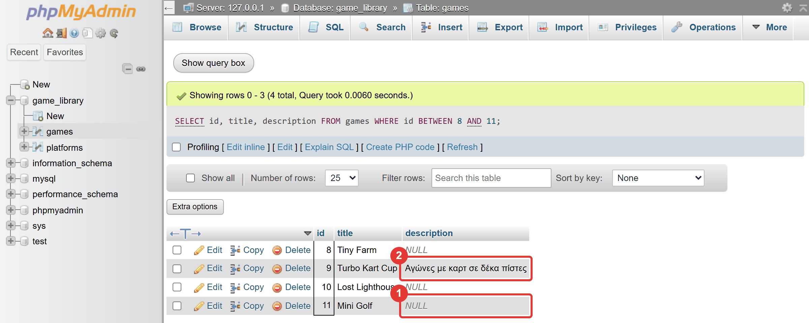

Μάθημα 8: Σφάλματα και έλεγχος εισόδου¶
Python και MySQL: η εφαρμογή δεν σταματά όταν ο χρήστης κάνει λάθος, και η βάση προστατεύει τα δεδομένα της με περιορισμούς
Διάρκεια: 2 κύκλοι × περίπου 45′ εργασία (2 διδακτικές ώρες)
Φύλλο εργασίας
Αυτή η σελίδα εξηγεί τις έννοιες. Οι ασκήσεις και οι οδηγίες για κάθε κύκλο βρίσκονται στο Φύλλο εργασίας 8. Δούλεψε με τις δύο σελίδες ανοιχτές.
Αρχεία εργαστηρίου¶
| Αρχείο | Κύκλος |
|---|---|
| 01-start-state.sql | πριν αρχίσεις |
| 02-exceptions.py | 1 |
| 03-ask.py | 1 |
| 04-app.py | 1 |
| 05-constraints.sql | 2 |
| 06-final.py | 2 |
Η αποστολή¶
Η εφαρμογή του Μαθήματος 7 δουλεύει, αλλά σταματά με traceback αν στη χρονιά γράψεις abc. Ένας χρήστης θα
κάνει λάθος: από βιασύνη, από άγνοια, ή επίτηδες. Ένα καλό πρόγραμμα το περιμένει και απαντά ευγενικά.
Σήμερα χτίζεις δύο γραμμές άμυνας:
- Το πρόγραμμά σου ελέγχει ό,τι πληκτρολογεί ο χρήστης και ξαναρωτά, με
try/except. - Η βάση δεν δέχεται δεδομένα που παραβιάζουν τους κανόνες της (
UNIQUE,NOT NULL,CHECK), ό,τι κι αν της στείλει ένα πρόγραμμα, το phpMyAdmin ή ένα πρόγραμμα με λάθος.
Θυμάσαι ότι το XAMPP δέχεται το abc στη χρονιά και το αποθηκεύει ως 0 (Μάθημα 5); Σήμερα το κλείνουμε και από τις
δύο μεριές.
Στο τέλος θα μπορείς¶
- να πιάνεις ένα σφάλμα με
try/exceptκαι να ξέρεις ποιο είδος σφάλματος πιάνεις (ValueError,InvalidOperation,ZeroDivisionError). - να γράφεις συναρτήσεις που ρωτούν ώσπου να πάρουν έγκυρη τιμή, με έλεγχο τύπου και εύρους.
- να εξηγείς γιατί δεν γράφουμε ποτέ
except:χωρίς όνομα σφάλματος. - να βάζεις στη βάση περιορισμούς
UNIQUE,DEFAULT,NOT NULLκαιCHECKμεALTER TABLE. - να εξηγείς τι είναι το
NULL, να το ελέγχεις μεIS NULL, και να ξέρεις ότι στην Python είναι τοNone. - να πιάνεις τα σφάλματα της βάσης (
mysql.connector.Error,IntegrityError) και να διαβάζεις τοerrnoκαι τοmsg. - να εξηγείς γιατί χρειάζονται και οι δύο γραμμές άμυνας.
Πριν αρχίσεις¶
- Ξεκίνα τη MySQL και τον Apache από το XAMPP Control Panel.
- Φτιάξε έναν φάκελο
08-errors-validationμέσα στον φάκελο των μαθημάτων και κατέβασε εκεί τα έξι αρχεία του πίνακα. Κράτησε ακριβώς τα ονόματα. Άνοιξε τον φάκελο στο VS Code και άνοιξε τερματικό. - Φέρε τη βάση στην κατάσταση εκκίνησης: στο phpMyAdmin επίλεξε τη βάση
game_library, άνοιξε την καρτέλα Import, διάλεξε το01-start-state.sqlκαι πάτα Import. - Έλεγξε στην καρτέλα Browse ότι ο
gamesέχει 14 γραμμές και οplatforms5.
Το αρχείο εκκίνησης σβήνει τα δεδομένα σου
Το 01-start-state.sql σβήνει τους πίνακες games, platforms και players και τους φτιάχνει από την
αρχή, με τα δεδομένα στα οποία τελειώνει το Μάθημα 7. Έτσι ξεκινάμε όλοι από τα ίδια δεδομένα. Αν σήμερα
χαλάσεις τα δεδομένα ή τους περιορισμούς, τρέξε το ξανά.
Ο κύκλος εργασίας
Πρόβλεψη → εκτέλεση → σύγκριση → εξήγηση. Σήμερα πρόβλεψε ποια γραμμή του προγράμματος θα εκτελεστεί, και ποιος θα πιάσει το λάθος: το πρόγραμμα ή η βάση.
Κύκλος 1 — Το πρόγραμμα ελέγχει την είσοδο¶
Σε αυτόν τον κύκλο μαθαίνεις να πιάνεις σφάλματα, γράφεις συναρτήσεις που ρωτούν μέχρι να πάρουν σωστή τιμή, και τις βάζεις στην εφαρμογή.
1.1 Οι εξαιρέσεις και το try/except¶
Όταν η int("abc") αποτυγχάνει, η Python ρίχνει μια εξαιρέση (exception): δείχνει το traceback και σταματά
το πρόγραμμα. Αν όμως προβλέψεις το λάθος, μπορείς να το πιάσεις:
try:
year = int(text)
print(f"Η χρονιά είναι {year}.")
except ValueError:
print(f"Το «{text}» δεν είναι ακέραιος αριθμός.")
Πώς δουλεύει:
- Η Python εκτελεί τις γραμμές του
tryμία-μία. - Αν δεν συμβεί σφάλμα, το
exceptπροσπερνιέται. - Αν συμβεί σφάλμα του είδους που γράφεις στο
except, η Python πηδά αμέσως στοexcept. Οι γραμμές τουtryπου έμεναν δεν εκτελούνται. Μετά το πρόγραμμα συνεχίζει κανονικά κάτω από τοtry/except.
Τι έγινε μέσα στο try |
Τι εκτελείται |
|---|---|
| όλα πήγαν καλά | όλο το try, μετά ό,τι ακολουθεί (το except όχι) |
σφάλμα που ταιριάζει με το except |
το try μέχρι τη γραμμή του σφάλματος, μετά το except, μετά ό,τι ακολουθεί |
| σφάλμα που δεν ταιριάζει | το πρόγραμμα σταματά με traceback, όπως πριν |
1.2 Ποιο σφάλμα πιάνω;¶
Κάθε σφάλμα έχει όνομα. Το βλέπεις στην τελευταία γραμμή του traceback. Το except πρέπει να γράφει το
σωστό όνομα, αλλιώς δεν πιάνει τίποτα:
| Κώδικας | Σφάλμα |
|---|---|
int("abc") |
ValueError |
Decimal("abc") |
decimal.InvalidOperation (όχι ValueError) |
10 / 0 |
ZeroDivisionError |
Η Decimal έχει δικό της σφάλμα. Γι' αυτό, για να πιάσεις την Decimal, χρειάζεσαι
from decimal import Decimal, InvalidOperation.
Αν μια εντολή μπορεί να δώσει διαφορετικά σφάλματα, γράφεις περισσότερα except:
try:
print(10 / int(text))
except ValueError:
print("Δεν είναι ακέραιος αριθμός.")
except ZeroDivisionError:
print("Δεν διαιρούμε με το μηδέν.")
Ποτέ except: χωρίς όνομα
Το except: χωρίς όνομα πιάνει κάθε σφάλμα, ακόμη και τα δικά σου λάθη στον κώδικα (π.χ. μια λάθος γραμμένη
μεταβλητή). Το πρόγραμμα θα έγραφε «Δεν είναι αριθμός» για ένα λάθος δικό σου, και δεν θα το έβρισκες ποτέ.
Πιάνεις μόνο το σφάλμα που περιμένεις.
Στάδιο 1 — Τα πρώτα try/except¶
Άνοιξε το 02-exceptions.py. Συμπλήρωσε τα τρία κενά (____) και τρέξε το πολλές φορές, με σωστές και με λάθος
τιμές. Πρόβλεψε πρώτα τι θα γίνει. Δεν πρέπει να δεις ποτέ traceback.
"""Στάδιο 1 — try/except: πιάνω το σφάλμα αντί να σταματά το πρόγραμμα.
Τρία μικρά πειράματα. Τρέξε το πρόγραμμα πολλές φορές, με σωστές και με λάθος τιμές (π.χ. «abc», «3,49»,
ένα κενό Enter, «0» στο τρίτο), και δες ότι δεν εμφανίζεται ποτέ traceback.
Συμπλήρωσε τα τρία κενά (____).
"""
from decimal import Decimal, InvalidOperation
# --- Πείραμα 1: ακέραιος αριθμός -------------------------------------------------------------------------
text = input("Χρονιά: ")
try:
year = int(text)
print(f"Η χρονιά είναι {year}.")
# TODO 1: η int() δίνει ValueError όταν το κείμενο δεν είναι ακέραιος αριθμός
except ____:
print(f"Το «{text}» δεν είναι ακέραιος αριθμός.")
# --- Πείραμα 2: τιμή με Decimal ---------------------------------------------------------------------------
text = input("Τιμή: ")
try:
price = Decimal(text)
print(f"Η τιμή είναι {price} €.")
# TODO 2: η Decimal() δίνει InvalidOperation (ΟΧΙ ValueError) όταν το κείμενο δεν είναι αριθμός
except ____:
print(f"Το «{text}» δεν είναι αριθμός.")
# --- Πείραμα 3: δύο διαφορετικά σφάλματα, δύο except ---------------------------------------------------------
text = input("Διαιρώ το 10 με έναν ακέραιο: ")
try:
print(f"10 / {text} = {10 / int(text)}")
except ValueError:
print("Δεν είναι ακέραιος αριθμός.")
# TODO 3: η διαίρεση με το μηδέν δίνει ZeroDivisionError
except ____:
print("Δεν διαιρούμε με το μηδέν.")
print("Το πρόγραμμα έφτασε μέχρι το τέλος.")
1.3 Ρωτάω ώσπου να πάρω σωστή τιμή¶
Σε μια εφαρμογή δεν αρκεί να πιάσεις το σφάλμα: πρέπει να ξαναρωτήσεις. Το μοτίβο είναι ένας βρόχος
while True (από το Μάθημα 7) με try μέσα, και ένα return όταν η τιμή είναι σωστή:
def ask_int(message, low, high):
"""Ρωτά ώσπου ο χρήστης να γράψει ακέραιο από low έως high, και τον επιστρέφει."""
while True:
text = input(message)
try:
number = int(text)
if low <= number <= high:
return number # σωστή τιμή: φεύγει από τη συνάρτηση
print(f"Ο αριθμός πρέπει να είναι από {low} έως {high}.")
except ValueError:
print("Γράψε έναν ακέραιο αριθμό.") # λάθος τύπος: ξαναρωτά
Η συνάρτηση ελέγχει δύο διαφορετικά πράγματα:
- τον τύπο: είναι ακέραιος αριθμός; (το πιάνει το
except ValueError) - το εύρος: είναι λογικός; (το πιάνει το
if)
Το return μέσα στον βρόχο βγάζει και από τον βρόχο και από τη συνάρτηση, και δίνει την τιμή στον καλούντα.
Ο χρήστης δεν βγαίνει ποτέ από το ερώτημα με λάθος τιμή.
Όμοια δουλεύουν και οι άλλες δύο συναρτήσεις του μαθήματος:
| Συνάρτηση | Τι ελέγχει | Λεπτομέρεια |
|---|---|---|
ask_text(message) |
το κείμενο δεν είναι κενό | .strip() αφαιρεί τα κενά στις άκρες |
ask_int(message, low, high) |
ακέραιος αριθμός μέσα σε όρια | except ValueError |
ask_price(message) |
τιμή από 0.01 έως 999.99 |
except InvalidOperation· δέχεται και κόμμα (3,49) με .replace(",", ".") |
Στην ask_price, η σύγκριση με τα όρια γράφεται μέσα στο try. Ο λόγος: η Decimal δέχεται και το κείμενο
nan («όχι αριθμός»), και η σύγκρισή του με άλλον αριθμό ρίχνει κι αυτή InvalidOperation. Μέσα στο try, την πιάνει
το ίδιο except.
Στάδιο 2 — Οι συναρτήσεις ρωτήματος¶
Άνοιξε το 03-ask.py. Συμπλήρωσε τα τέσσερα κενά και τρέξε το. Δοκίμασε τις συναρτήσεις με τιμές που δεν
κάνουν: κενό, abc, 3.5 στη χρονιά, 1800, 0, 1234.5, nan. Δοκίμασε και το 3,49 στην τιμή.
"""Στάδιο 2 — Συναρτήσεις που ρωτούν ώσπου να πάρουν σωστή τιμή.
Οι ask_text, ask_int και ask_price ξαναρωτούν μέχρι ο χρήστης να γράψει έγκυρη τιμή, και τότε την επιστρέφουν.
Στο τέλος του αρχείου υπάρχει ένα μικρό πρόγραμμα που τις δοκιμάζει.
Συμπλήρωσε τα τέσσερα κενά (____).
"""
from decimal import Decimal, InvalidOperation
def ask_text(message):
"""Ρωτά ώσπου ο χρήστης να γράψει κάτι (όχι κενό) και επιστρέφει το κείμενο, χωρίς κενά στις άκρες."""
while True:
text = input(message).strip()
if text != "":
return text
print("Το πεδίο δεν μπορεί να μένει κενό.")
def ask_int(message, low, high):
"""Ρωτά ώσπου ο χρήστης να γράψει ακέραιο από low έως high, και τον επιστρέφει."""
while True:
text = input(message)
try:
number = int(text)
# TODO 1: ο αριθμός πρέπει να είναι ανάμεσα στο low και στο high (και τα δύο επιτρέπονται)
if low <= number ____ high:
return number
print(f"Ο αριθμός πρέπει να είναι από {low} έως {high}.")
# TODO 2: η int() δίνει ValueError όταν το κείμενο δεν είναι ακέραιος αριθμός
except ____:
print("Γράψε έναν ακέραιο αριθμό.")
def ask_price(message):
"""Ρωτά ώσπου ο χρήστης να γράψει τιμή από 0.01 έως 999.99 (δέχεται και κόμμα) και την επιστρέφει ως Decimal."""
while True:
text = input(message).replace(",", ".")
try:
price = Decimal(text)
if Decimal("0.01") <= price <= Decimal("999.99"):
# TODO 3: επίστρεψε την τιμή
return ____
print("Η τιμή πρέπει να είναι από 0.01 έως 999.99.")
# TODO 4: η Decimal() δίνει InvalidOperation (ΟΧΙ ValueError) όταν το κείμενο δεν είναι αριθμός
except ____:
print("Γράψε έναν αριθμό, π.χ. 3.49.")
print("=== Δοκιμή των συναρτήσεων ρωτήματος ===")
title = ask_text("Τίτλος: ")
year = ask_int("Χρονιά (1970 έως 2100): ", 1970, 2100)
price = ask_price("Τιμή (0.01 έως 999.99): ")
print()
print("Πήρα:", title, year, price)
1.4 Η εφαρμογή χωρίς traceback¶
Στο Στάδιο 3 βάζεις τις συναρτήσεις ρωτήματος στην εφαρμογή του Μαθήματος 7. Οι add_game και change_price δεν
καλούν πια την int() και την Decimal() απευθείας. Ρωτούν με τις ask_*, που δεν επιστρέφουν ποτέ λάθος τιμή.
Ο έλεγχος βρίσκεται σε ένα μέρος, και αν αύριο αλλάξει ο κανόνας (π.χ. ανώτατη τιμή 500), τον αλλάζεις μία φορά.
Στάδιο 3 — Η εφαρμογή με έλεγχο εισόδου¶
Άνοιξε το 04-app.py. Περιέχει όλη την εφαρμογή του Μαθήματος 7 και τις τρεις ask_* έτοιμες. Συμπλήρωσε τα τέσσερα
κενά στις add_game και change_price και τρέξε την. Δοκίμασε να κάνεις λάθη: κενό τίτλο, γράμματα στη χρονιά,
τιμή 0. Νέα κομμάτια:
def add_game(connection):
"""Ζητά τα στοιχεία ενός παιχνιδιού (με έλεγχο) και το προσθέτει στη βάση."""
# TODO 1: ask_text για κείμενο, ask_int για ακέραιο, ask_price για τιμή (όπως στο Στάδιο 2)
title = ____("Τίτλος: ")
genre = ask_text("Είδος: ")
year = ____("Χρονιά (1970 έως 2100): ", 1970, 2100)
price = ____("Τιμή (0.01 έως 999.99): ")
cursor = connection.cursor()
cursor.execute(
"INSERT INTO games (title, genre, release_year, price) VALUES (%s, %s, %s, %s)",
(title, genre, year, price),
)
connection.commit()
print(f"Προστέθηκε το «{title}» με id {cursor.lastrowid}.")
cursor.close()
def change_price(connection):
"""Ζητά το id ενός παιχνιδιού και τη νέα τιμή του (με έλεγχο), και αλλάζει την τιμή."""
# TODO 2: το id είναι ακέραιος από 1 έως 100000
game_id = ____("id παιχνιδιού: ", 1, 100000)
price = ask_price("Νέα τιμή (0.01 έως 999.99): ")
cursor = connection.cursor()
cursor.execute("UPDATE games SET price = %s WHERE id = %s", (price, game_id))
connection.commit()
if cursor.rowcount == 0:
print("Δεν άλλαξε καμία γραμμή: ή δεν υπάρχει τέτοιο id ή η τιμή ήταν ήδη αυτή.")
else:
print(f"Η τιμή του παιχνιδιού με id {game_id} έγινε {price} €.")
cursor.close()
Συνέχισε στο Φύλλο εργασίας, Κύκλος 1.
Κύκλος 2 — Η βάση προστατεύει τα δεδομένα¶
Σε αυτόν τον κύκλο μαθαίνεις να βάζεις κανόνες στη βάση, και να πιάνεις στην Python τα σφάλματα που τους παραβιάζουν.
2.1 Γιατί δεν αρκεί το πρόγραμμα¶
Ο έλεγχος του προγράμματος είναι χρήσιμος, γιατί δίνει ευγενικό μήνυμα και ξαναρωτά πριν σταλεί οτιδήποτε στη βάση.
Δεν αρκεί όμως, γιατί δεδομένα φτάνουν στη βάση και από άλλους δρόμους: από το phpMyAdmin, από ένα άλλο
πρόγραμμα, από ένα λάθος στο δικό σου (π.χ. μια συνάρτηση που ξέχασε το return και στέλνει None).
Η βάση είναι ο τελευταίος φρουρός: οι κανόνες της ισχύουν για όλους.
2.2 Οι περιορισμοί¶
Οι κανόνες της βάσης λέγονται περιορισμοί (constraints). Τους γράφεις στη δομή του πίνακα:
| Περιορισμός | Τι κάνει | Παράδειγμα | Σφάλμα όταν παραβιάζεται |
|---|---|---|---|
NOT NULL |
δεν δέχεται «καμία τιμή» | title VARCHAR(100) NOT NULL (τον έχεις ήδη) |
#1048 |
UNIQUE |
δεν δέχεται δεύτερη ίδια τιμή | UNIQUE (title) |
#1062 |
DEFAULT |
βάζει τιμή όταν δεν δοθεί καμία | genre … DEFAULT 'Άλλο' |
δεν υπάρχει σφάλμα |
NULL |
επιτρέπει «καμία τιμή» | description VARCHAR(200) NULL |
δεν υπάρχει σφάλμα |
CHECK |
κανόνας για την τιμή | CHECK (price > 0) |
#4025 |
Σε έναν πίνακα που υπάρχει ήδη, τους προσθέτεις με ALTER TABLE:
ALTER TABLE games ADD UNIQUE (title);
ALTER TABLE games MODIFY genre VARCHAR(30) NOT NULL DEFAULT 'Άλλο';
ALTER TABLE games ADD description VARCHAR(200) NULL;
ALTER TABLE games ADD CONSTRAINT chk_price CHECK (price > 0);
Η βάση ελέγχει και τα υπάρχοντα δεδομένα: αν δεν τηρούν τον κανόνα, το ALTER αποτυγχάνει. Αν στο games ήταν
ακόμη τα τρία «Mini Golf» του Μαθήματος 5, το ADD UNIQUE (title) θα έδινε #1062. Γι' αυτό τα σβήσαμε στο
Μάθημα 6.
Η σύγκριση του UNIQUE στα κείμενα δεν ξεχωρίζει κεφαλαία από πεζά, όπως και στο WHERE: ο τίτλος «MINI GOLF»
θεωρείται ίδιος με το «Mini Golf».
Όταν προσπαθήσεις να προσθέσεις έναν τίτλο που υπάρχει ήδη, το phpMyAdmin δείχνει το σφάλμα της βάσης:

2.3 Το NULL¶
Το NULL σημαίνει «δεν υπάρχει τιμή» ή «άγνωστη τιμή». Δεν είναι το 0 και δεν είναι το κενό
κείμενο ''. Ένα παιχνίδι χωρίς περιγραφή έχει description = NULL.
- Για να ελέγξεις το
NULLγράφειςIS NULL(ήIS NOT NULL). Το= NULLδεν δουλεύει: η σύγκριση με «άγνωστο» δεν γίνεται ποτέ αληθής, και το ερώτημα επιστρέφει 0 γραμμές, χωρίς σφάλμα.
SELECT id, title FROM games WHERE description IS NULL; -- τα παιχνίδια χωρίς περιγραφή
SELECT id, title FROM games WHERE description = NULL; -- ΠΑΝΤΑ 0 γραμμές! (σιωπηλό λάθος)
Το phpMyAdmin γράφει τις τιμές NULL με πλάγια γράμματα, για να μην τις μπερδεύεις με ένα κείμενο «NULL»:

- Στην Python, το
NULLτης βάσης είναι τοNone. Αν στείλειςNoneως παράμετρο, η βάση αποθηκεύειNULL. Αν διαβάσεις μια στήλη που έχειNULL, παίρνειςNone. (ΤοNoneτο ξέρεις από το Μάθημα 7.)
Το NOT NULL στο XAMPP έχει τρύπα
Αν στείλεις ρητά NULL σε στήλη NOT NULL, παίρνεις #1048. Αν όμως παραλείψεις τη στήλη από το INSERT
και δεν έχει DEFAULT, το XAMPP (που δεν είναι αυστηρό, όπως έμαθες στο Μάθημα 1) βάζει σιωπηλά κενό κείμενο
ή 0. Γι' αυτό υπάρχουν και το DEFAULT, και ο έλεγχος του προγράμματος (η ask_text δεν δέχεται κενό).
2.4 CHECK: κανόνες για τις τιμές¶
Το CHECK γράφει έναν κανόνα που πρέπει να ισχύει σε κάθε γραμμή:
ALTER TABLE games ADD CONSTRAINT chk_price CHECK (price > 0);
ALTER TABLE games ADD CONSTRAINT chk_year CHECK (release_year BETWEEN 1970 AND 2100);
Το CHECK κλείνει την τρύπα του Μαθήματος 5: το abc στη χρονιά γίνεται σιωπηλά 0, και το 0 παραβιάζει το
chk_year, οπότε η βάση δίνει #4025. Έχει όμως όρια: ελέγχει την τιμή μετά τη σιωπηλή μετατροπή. Η τιμή
1234.5 γίνεται σιωπηλά 999.99, που περνά τον έλεγχο. Γι' αυτό χρειάζεται και το πρόγραμμα (η ask_price δεν δέχεται
πάνω από 999.99).
Στάδιο 4 — Οι περιορισμοί στο phpMyAdmin¶
Άνοιξε το 05-constraints.sql. Συμπλήρωσε τα έξι κενά και τρέξε τις εντολές μία-μία, με τη σειρά. Πρόβλεψε πρώτα
αν η καθεμία θα πετύχει ή θα δώσει σφάλμα. Οι εντολές με σημείωση «ΘΑ ΔΩΣΕΙ ΣΦΑΛΜΑ» το δίνουν επίτηδες.
-- Στάδιο 4 — Οι περιορισμοί της βάσης: UNIQUE, DEFAULT, NULL και CHECK.
--
-- Πριν αρχίσεις: τρέξε το 01-start-state.sql (καρτέλα Import), ώστε ο games να έχει 14 γραμμές.
--
-- Πώς το τρέχεις:
-- 1. Συμπλήρωσε τα κενά (____) σε έναν επεξεργαστή κειμένου.
-- 2. Τρέξε κάθε εντολή ΞΕΧΩΡΙΣΤΑ στην καρτέλα SQL της βάσης game_library, με τη σειρά.
-- 3. ΠΡΩΤΑ πρόβλεψε αν η εντολή θα πετύχει ή θα δώσει σφάλμα, και ποιο (#αριθμός).
-- 4. Οι εντολές με σημείωση «ΘΑ ΔΩΣΕΙ ΣΦΑΛΜΑ» το δίνουν επίτηδες: δεν είναι δικό σου λάθος.
-- Ερώτημα 1 (έτοιμο): η δομή του πίνακα πριν από τις αλλαγές
DESCRIBE games;
-- Ερώτημα 2: ο τίτλος ενός παιχνιδιού πρέπει να είναι μοναδικός
ALTER TABLE games ADD ____ (title);
-- Ερώτημα 3: ΘΑ ΔΩΣΕΙ ΣΦΑΛΜΑ. Ο τίτλος «Mini Golf» υπάρχει ήδη
INSERT INTO games (title, genre, release_year, price)
VALUES ('Mini Golf', 'Αθλητικό', 2024, 3.49);
-- Ερώτημα 4: ΘΑ ΔΩΣΕΙ ΣΦΑΛΜΑ. Ο τίτλος δεν επιτρέπεται να είναι «τίποτα» (NULL)
INSERT INTO games (title, genre, release_year, price)
VALUES (____, 'Παζλ', 2024, 1.99);
-- Ερώτημα 5: αν δεν δοθεί είδος, να μπαίνει «Άλλο»
ALTER TABLE games MODIFY genre VARCHAR(30) NOT NULL ____ 'Άλλο';
-- Ερώτημα 6 (έτοιμο): προσθήκη χωρίς είδος και έλεγχος του αποτελέσματος
INSERT INTO games (title, release_year, price)
VALUES ('Quiz Master', 2024, 2.49);
SELECT id, title, genre
FROM games
WHERE title = 'Quiz Master';
-- Ερώτημα 7 (έτοιμο): νέα στήλη που ΕΠΙΤΡΕΠΕΙ NULL (όχι κάθε παιχνίδι έχει περιγραφή)
ALTER TABLE games ADD description VARCHAR(200) NULL;
-- Ερώτημα 8: ποια παιχνίδια ΔΕΝ έχουν περιγραφή; Το NULL ελέγχεται με IS, όχι με =
SELECT id, title
FROM games
WHERE description ____ NULL;
-- Ερώτημα 9: τι γίνεται αν γράψεις «= NULL»; Πρόβλεψε πρώτα πόσες γραμμές θα βγουν
SELECT id, title
FROM games
WHERE description = NULL;
-- Ερώτημα 10 (έτοιμο): δώσε περιγραφή σε ένα παιχνίδι
UPDATE games
SET description = 'Αγώνες με καρτ σε δέκα πίστες'
WHERE id = 9;
-- Ερώτημα 11: ποια παιχνίδια ΕΧΟΥΝ περιγραφή;
SELECT id, title, description
FROM games
WHERE description IS ____ NULL;
-- Ερώτημα 12: έλεγχος τιμών. Η τιμή πρέπει να είναι μεγαλύτερη από 0
ALTER TABLE games ADD CONSTRAINT chk_price ____ (price > 0);
-- Ερώτημα 13: ΘΑ ΔΩΣΕΙ ΣΦΑΛΜΑ. Τιμή 0
INSERT INTO games (title, genre, release_year, price)
VALUES ('Δωρεάν παιχνίδι', 'Παζλ', 2024, 0);
-- Ερώτημα 14 (έτοιμο): έλεγχος και για τη χρονιά
ALTER TABLE games ADD CONSTRAINT chk_year CHECK (release_year BETWEEN 1970 AND 2100);
-- Ερώτημα 15: ΘΑ ΔΩΣΕΙ ΣΦΑΛΜΑ. Θυμάσαι ότι στο Μάθημα 5 το «abc» στη χρονιά αποθηκευόταν ως 0;
INSERT INTO games (title, genre, release_year, price)
VALUES ('Παιχνίδι χωρίς χρονιά', 'Παζλ', 'abc', 1.99);
2.5 Τα σφάλματα της βάσης στην Python¶
Τα σφάλματα της βάσης φτάνουν στην Python σαν εξαιρέσεις, και τα πιάνεις με try/except όπως όλα. Όλα
κληρονομούν από την mysql.connector.Error, και κάθε είδος έχει το δικό του όνομα:
| Σφάλμα | Πότε | Παράδειγμα (errno) |
|---|---|---|
mysql.connector.IntegrityError |
παραβίαση περιορισμού | 1062 (UNIQUE), 1048 (NOT NULL), 4025 (CHECK) |
mysql.connector.ProgrammingError |
λάθος στη SQL ή στα ονόματα | 1064 (σύνταξη), 1146 (δεν υπάρχει ο πίνακας) |
mysql.connector.DatabaseError |
πρόβλημα με τη σύνδεση ή τη βάση | 2003 (η MySQL δεν τρέχει) |
mysql.connector.Error |
όλα τα παραπάνω (η «μητέρα» τους) |
Το αντικείμενο του σφάλματος δίνει τον αριθμό (error.errno) και το μήνυμα (error.msg):
try:
cursor.execute(sql, values)
connection.commit()
except mysql.connector.IntegrityError as error:
connection.rollback()
if error.errno == 1062:
print("Υπάρχει ήδη παιχνίδι με αυτόν τον τίτλο.")
else:
print("Η βάση δεν δέχτηκε τα δεδομένα:", error.msg)
- Το
as errorδίνει όνομα στο αντικείμενο του σφάλματος. - Στο
exceptγράφεις όσο πιο συγκεκριμένο σφάλμα μπορείς. Αν έχεις πολλάexcept, η Python δοκιμάζει με τη σειρά και εκτελεί το πρώτο που ταιριάζει, γι' αυτό το συγκεκριμένο (IntegrityError) πάει πριν από το γενικό (Error). - Το
rollback()στοexceptκαθαρίζει ό,τι δεν ολοκληρώθηκε. - Το ίδιο ισχύει για τη σύνδεση: αν η MySQL δεν τρέχει, το
mysql.connector.connect(...)δίνειError, και η εφαρμογή μπορεί να πει «έλεγξε ότι η MySQL τρέχει» αντί να δείξει traceback (θυμάσαι τα2003του Μαθήματος 3). - Η
connection.is_connected()απαντά αν η σύνδεση ζει ακόμη.
2.6 Οι δύο γραμμές άμυνας μαζί¶
| Γραμμή | Πλεονέκτημα | Όριο |
|---|---|---|
Πρόγραμμα (ask_*, try/except) |
ευγενικό μήνυμα, ξαναρωτά, δεν στέλνει τίποτα λάθος | προστατεύει μόνο τα δεδομένα που περνούν από αυτό το πρόγραμμα |
| Βάση (περιορισμοί) | ισχύει για όλους, είναι ο τελευταίος φρουρός | δίνει τεχνικό σφάλμα, και ένα μόνο κάθε φορά |
Χρειάζονται και οι δύο. Στην τελική εφαρμογή το πρόγραμμα ελέγχει ό,τι μπορεί να ελέγξει πρώτο (κενό, γράμματα,
όρια). Η UNIQUE του τίτλου δεν μπορεί να ελεγχθεί από το πρόγραμμα χωρίς ερώτημα στη βάση, οπότε την αναλαμβάνει η
βάση, και το πρόγραμμα πιάνει το #1062 και μιλά ευγενικά.
Στάδιο 5 — Η εφαρμογή πιάνει τα σφάλματα της βάσης¶
Άνοιξε το 06-final.py. Δουλεύει μετά το Στάδιο 4 (ο games έχει πια UNIQUE στον τίτλο και τη στήλη
description). Η add_game ρωτά και μια προαιρετική περιγραφή (αν πατήσεις Enter, στέλνει None, δηλαδή NULL) και
πιάνει το #1062. Συμπλήρωσε τα τέσσερα κενά και τρέξε την. Νέα κομμάτια:
def add_game(connection):
"""Ζητά τα στοιχεία ενός παιχνιδιού (με έλεγχο) και το προσθέτει στη βάση."""
title = ask_text("Τίτλος: ")
genre = ask_text("Είδος: ")
year = ask_int("Χρονιά (1970 έως 2100): ", 1970, 2100)
price = ask_price("Τιμή (0.01 έως 999.99): ")
description = input("Περιγραφή (Enter για καμία): ").strip()
if description == "":
description = None # το None της Python γίνεται NULL στη βάση
cursor = connection.cursor()
try:
cursor.execute(
"INSERT INTO games (title, genre, release_year, price, description) VALUES (%s, %s, %s, %s, %s)",
(title, genre, year, price, description),
)
connection.commit()
print(f"Προστέθηκε το «{title}» με id {cursor.lastrowid}.")
# TODO 1: οι περιορισμοί της βάσης (UNIQUE, NOT NULL, CHECK) δίνουν σφάλμα τύπου IntegrityError
except mysql.connector.____ as error:
# TODO 2: ακύρωσε ό,τι δεν ολοκληρώθηκε
connection.____()
# TODO 3: ο αριθμός του σφάλματος είναι η ιδιότητα errno· το 1062 σημαίνει «διπλή τιμή» σε στήλη UNIQUE
if error.____ == 1062:
print(f"Υπάρχει ήδη παιχνίδι με τίτλο «{title}».")
else:
print("Η βάση δεν δέχτηκε τα δεδομένα:", error.msg)
cursor.close()
Και η main, που πιάνει το σφάλμα σύνδεσης και τα υπόλοιπα σφάλματα της βάσης, ώστε η εφαρμογή να μη σταματά:
def main():
"""Το κύριο πρόγραμμα: ανοίγει τη σύνδεση και τρέχει το μενού ώσπου ο χρήστης να διαλέξει έξοδο."""
# TODO 4: αν η MySQL δεν τρέχει, η connect() δίνει σφάλμα του οδηγού· η Error τα πιάνει όλα (είναι η «μητέρα» τους)
try:
connection = connect()
except mysql.connector.____ as error:
print("Δεν μπόρεσα να συνδεθώ με τη βάση:", error.msg)
print("Έλεγξε ότι η MySQL τρέχει στο XAMPP Control Panel.")
return
while True:
# Η κάθε ενέργεια μπορεί να αποτύχει με σφάλμα της βάσης: το πιάνουμε εδώ, ώστε η εφαρμογή να μη σταματά
try:
# Αν η σύνδεση χάθηκε (π.χ. σταμάτησε η MySQL), δεν έχει νόημα να συνεχίσουμε
if not connection.is_connected():
print("Χάθηκε η σύνδεση με τη βάση. Η εφαρμογή τερματίζεται.")
break
# Τελειώνει κάθε ανοιχτή συναλλαγή, ώστε η εφαρμογή να βλέπει τα τελευταία δεδομένα της βάσης
connection.commit()
show_menu()
choice = input("Επιλογή: ")
if choice == "1":
list_games(connection)
elif choice == "2":
search_games(connection)
elif choice == "3":
add_game(connection)
elif choice == "4":
change_price(connection)
elif choice == "5":
delete_game(connection)
elif choice == "0":
break
else:
print("Άγνωστη επιλογή. Γράψε έναν από τους αριθμούς του μενού.")
except mysql.connector.Error as error:
print("Σφάλμα της βάσης:", error.msg)
connection.close()
print("Γεια σου!")
Συνέχισε στο Φύλλο εργασίας, Κύκλος 2.
Έλεγχος πριν ολοκληρώσεις¶
- □ Τα Στάδια 1–3 δουλεύουν και η εφαρμογή δεν δείχνει traceback όταν γράφεις λάθος τιμές.
- □ Στο Στάδιο 4 είδες τα σφάλματα
#1062,#1048και#4025, και ξέρεις ποιος περιορισμός τα έδωσε. - □ Στο Στάδιο 5 ο διπλός τίτλος δίνει ευγενικό μήνυμα και όχι traceback.
- □ Μπορείς να εξηγήσεις γιατί
WHERE description = NULLδεν βρίσκει τίποτα. - □ Καμία
exceptστον κώδικά σου δεν είναι χωρίς όνομα σφάλματος. - □ Όταν τελείωσες, σταμάτησες τον Apache και τη MySQL.
Για να θυμάσαι¶
try:…except ΟΝΟΜΑ:πιάνει το σφάλμα και το πρόγραμμα συνεχίζει. Γράφεις το όνομα του σφάλματος που περιμένεις, ποτέexcept:χωρίς όνομα.- Η
int()δίνειValueError, ηDecimal()δίνειInvalidOperation, η διαίρεση με το μηδένZeroDivisionError. - Μια συνάρτηση που ρωτά μέχρι να πάρει σωστή τιμή:
while True+try/except+return. - Η βάση έχει περιορισμούς:
NOT NULL,UNIQUE,DEFAULT,CHECK. Τους προσθέτεις μεALTER TABLE. - Το
NULLείναι «καμία τιμή», όχι0και όχι''. Ελέγχεται μεIS NULL, ποτέ με= NULL. Στην Python είναι τοNone. - Τα σφάλματα της βάσης είναι
mysql.connector.Error. ΤοIntegrityErrorείναι οι παραβιάσεις περιορισμών.error.errnoγια τον αριθμό,error.msgγια το μήνυμα. - Χρειάζονται δύο γραμμές άμυνας: το πρόγραμμα (ευγενικό, πρώτο) και η βάση (τελικός φρουρός).
- Το XAMPP δεν είναι αυστηρό: το
CHECKκαι τοUNIQUEδουλεύουν, αλλά μια στήληNOT NULLπου παραλείπεται από τοINSERTπαίρνει σιωπηλά κενό ή0.
Λεξιλόγιο¶
εξαιρέση (exception), try, except, ValueError, InvalidOperation, επικύρωση (validation),
περιορισμός (constraint), UNIQUE, NOT NULL, DEFAULT, NULL, None, CHECK,
ALTER TABLE, IntegrityError, errno, rollback.
Δική σου εκδοχή¶
Αν τελειώσεις νωρίτερα, δούλεψε με μία αλλαγή τη φορά και δοκίμαζε μετά από κάθε αλλαγή:
- Η στήλη
titleείναιVARCHAR(100). Στο XAMPP, ένας τίτλος 150 χαρακτήρων κόβεται σιωπηλά στους 100. Πρόσθεσε στηνask_textμια τρίτη παράμετροmax_lengthκαι έλεγχο μήκους. Ηask_text("Τίτλος: ", 100)να μη δέχεται μεγαλύτερο κείμενο. - Στην
search_gamesεμφάνισε και τη στήληdescription(μεNoneόπου δεν υπάρχει περιγραφή, και «—» στην εμφάνιση). - Πρόκληση 1: άλλαξε προσωρινά το
1970σε1900στηνask_intτηςadd_gameκαι πρόσθεσε παιχνίδι με χρονιά1900. Ποιος πιάνει το λάθος τώρα, και τι μήνυμα βλέπεις; Επανάφερε το1970. - Πρόκληση 2: σβήσε από το
06-final.pyτοconnection.rollback()τουexcept. Αλλάζει κάτι στη συμπεριφορά; Γιατί το κρατάμε παρ' όλα αυτά;